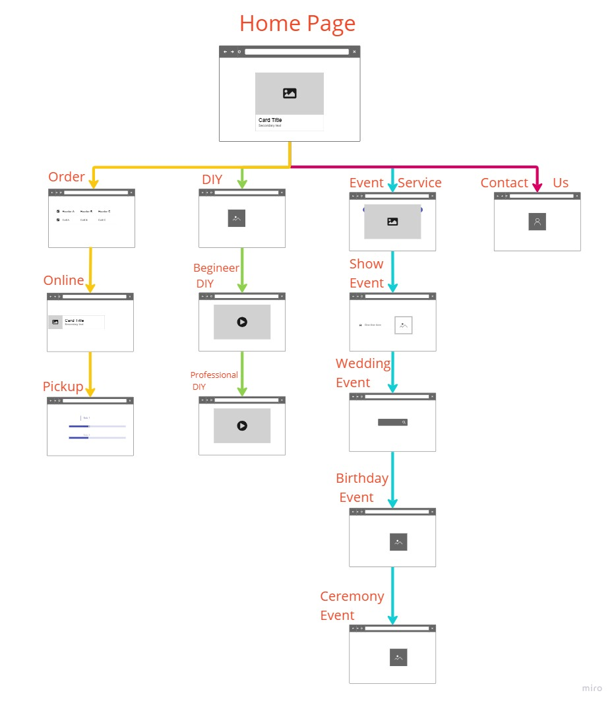

- making flowerbed and give experiences to our customer to pick freshly flowers do their self
- give experiences to customers for getting freshly feeling when they coming our farms
- to collect data from customer and making supurise send flower gift to customer / their birthdays , anniversary or somethings like that
- connect with event organizer, making service for event flower dressing, wedding flower dressing and others every venues.
- to get customer can order by online within one day
-to get the many customers from our contact email at our florist webiste. We watch and reply email days by days.
- Target Audience - to teenagers, to business man, to company (We made budget nosegay for teenagers and very big nosegay for business and company/ can choose on the siteA)

https://www.bplans.com/florist-business-plan/strategy-and-implementation-summary/
https://www.staceybarr.com/measure-up/how-to-measure-your-organisations-mission/